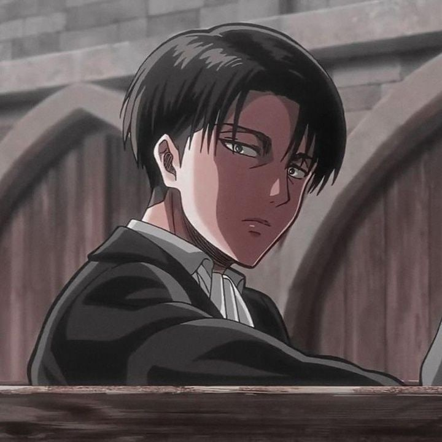

Центр моддинга aoc
Оффицальный
Тут собрана разная информацию о представителях сегмента.
домой
назад
Антон Егоров

Антон Егоров - угнетатель, антицентровец, лидер жидкого дриста раком , Генерал танковой дивизии Угнетателей.
Подробнее
Антон Егоров родился в Майнце, окончил военное училище, где познакомился со Степаном Водяровым и переехал в Харьков, где возглавил танковую дивизию. Участвовал в Харьковских, Крымских, Куанских сражениях на стороне угнетателей против центра моддинга. Большинство его планов работали успешно, из-за этого его повысили и сделали национальным героем угнетателей.
В чёрные месяцы угнетателей занимался ловлей проституток.